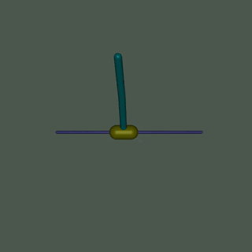

备注
点击此处下载完整示例代码
强化学习（PPO）与 TorchRL 教程 ¶
创建于：2025 年 4 月 1 日 | 最后更新：2025 年 4 月 1 日 | 最后验证：2024 年 11 月 5 日
作者：Vincent Moens
本教程演示了如何使用 PyTorch 和 torchrl 训练一个参数化策略网络来解决来自 OpenAI-Gym/Farama-Gymnasium 控制库的倒立摆任务。

倒立摆 ¶
关键学习点：
如何在 TorchRL 中创建环境，转换其输出，并从该环境中收集数据；
如何使用
TensorDict使你的类相互通信；使用 TorchRL 构建训练循环的基础
如何计算策略梯度方法的优势信号
如何使用概率神经网络创建随机策略
如何创建动态重放缓冲区并从中无重复地采样
我们将介绍 TorchRL 的六个关键组件：
如果你在 Google Colab 上运行此代码，请确保安装以下依赖项：
!pip3 install torchrl
!pip3 install gym[mujoco]
!pip3 install tqdm
近端策略优化（PPO）是一种策略梯度算法，其中收集一批数据并直接用于训练策略，以最大化给定某些近端约束的预期回报。你可以将其视为 REINFORCE 基础策略优化算法的复杂版本。更多信息，请参阅近端策略优化算法论文。
PPO 通常被视为一种快速高效的在线策略强化算法。TorchRL 提供了一个损失模块，为你完成所有工作，因此你可以依赖这个实现，专注于解决问题，而不是每次训练策略时都重新发明轮子。
为了完整性，这里简要概述一下损失函数的计算内容，尽管这一点已经由我们的 ClipPPOLoss 模块处理——算法的工作原理如下：1. 我们将通过在环境中运行策略来采样一批数据，并对其进行给定步数的操作。2. 然后，我们将使用该批次的随机子样本进行给定数量的优化步骤，并使用剪裁版本的 REINFORCE 损失。3. 剪裁将给我们的损失设置一个悲观的上限：较低的回报估计将比较高的回报估计更有利。损失的精确公式如下：
该损失函数包含两个部分：在最小值操作符的第一部分，我们简单地计算了加权版本的 REINFORCE 损失（例如，一个已经修正了当前策略配置落后于用于数据收集的配置的 REINFORCE 损失）。最小值操作符的第二部分是一个类似的损失，其中当比率超过或低于给定的阈值对时，我们将对它们进行剪裁。
这种损失确保无论优势是正还是负，都会阻止产生显著偏离先前配置的策略更新。
本教程的结构如下：
首先，我们将定义一组我们将用于训练的超参数。
接下来，我们将专注于创建我们的环境或模拟器，使用 TorchRL 的包装器和转换。
接下来，我们将设计策略网络和值模型，这对于损失函数是必不可少的。这些模块将被用于配置我们的损失模块。
接下来，我们将创建重放缓冲区和数据加载器。
最后，我们将运行我们的训练循环并分析结果。
在整个教程中，我们将使用 tensordict 库。 TensorDict 是 TorchRL 的通用语言：它帮助我们抽象模块读取和写入的内容，而无需过多关注具体的数据描述，更多地关注算法本身。
import warnings
warnings.filterwarnings("ignore")
from torch import multiprocessing
from collections import defaultdict
import matplotlib.pyplot as plt
import torch
from tensordict.nn import TensorDictModule
from tensordict.nn.distributions import NormalParamExtractor
from torch import nn
from torchrl.collectors import SyncDataCollector
from torchrl.data.replay_buffers import ReplayBuffer
from torchrl.data.replay_buffers.samplers import SamplerWithoutReplacement
from torchrl.data.replay_buffers.storages import LazyTensorStorage
from torchrl.envs import (Compose, DoubleToFloat, ObservationNorm, StepCounter,
TransformedEnv)
from torchrl.envs.libs.gym import GymEnv
from torchrl.envs.utils import check_env_specs, ExplorationType, set_exploration_type
from torchrl.modules import ProbabilisticActor, TanhNormal, ValueOperator
from torchrl.objectives import ClipPPOLoss
from torchrl.objectives.value import GAE
from tqdm import tqdm
定义超参数 ¶
我们为我们的算法设置超参数。根据可用的资源，可以选择在 GPU 上或在其他设备上执行策略。 frame_skip 将控制单个动作执行多少帧。其余需要计算帧数的参数都必须对此值进行调整（因为实际上一个环境步骤会返回 frame_skip 帧）。
is_fork = multiprocessing.get_start_method() == "fork"
device = (
torch.device(0)
if torch.cuda.is_available() and not is_fork
else torch.device("cpu")
)
num_cells = 256 # number of cells in each layer i.e. output dim.
lr = 3e-4
max_grad_norm = 1.0
数据收集参数 ¶
在收集数据时，我们可以通过定义 frames_per_batch 参数来选择每个批次的大小。我们还将定义我们允许使用的帧数（例如与模拟器的交互次数）。一般来说，强化学习算法的目标是尽可能快地学习解决任务，从环境交互的角度来看： total_frames 越低越好。
frames_per_batch = 1000
# For a complete training, bring the number of frames up to 1M
total_frames = 50_000
PPO 参数 ¶
在每次数据收集（或批量收集）时，我们将在一定数量的 epoch 上运行优化，每次都消耗我们刚刚获取的全部数据，在一个嵌套的训练循环中。这里的 sub_batch_size 与上面的 frames_per_batch 不同：回想一下，我们正在处理来自我们的收集器的“数据批次”，其大小由 frames_per_batch 定义，并且我们将在内部训练循环中进一步将其拆分为更小的子批次。这些子批次的大小由 sub_batch_size 控制。
sub_batch_size = 64 # cardinality of the sub-samples gathered from the current data in the inner loop
num_epochs = 10 # optimization steps per batch of data collected
clip_epsilon = (
0.2 # clip value for PPO loss: see the equation in the intro for more context.
)
gamma = 0.99
lmbda = 0.95
entropy_eps = 1e-4
定义环境 ¶
在强化学习（RL）中，环境通常是我们指代模拟器或控制系统的方式。各种库提供了强化学习的模拟环境，包括 Gymnasium（之前称为 OpenAI Gym）、DeepMind 控制套件等。作为一个通用库，TorchRL 的目标是提供一个可互换的接口，以访问大量的 RL 模拟器，允许你轻松地交换一个环境与另一个环境。例如，创建一个包装的 gym 环境只需要几个字符：
base_env = GymEnv("InvertedDoublePendulum-v4", device=device)
在此代码中需要注意几个要点：首先，我们通过调用 GymEnv 包装器创建了环境。如果传递了额外的关键字参数，它们将被传递给 gym.make 方法，从而覆盖了最常见的环境构建命令。或者，也可以直接使用 gym.make(env_name, **kwargs) 创建 gym 环境，并将其包装在 GymWrapper 类中。
同样， device 参数：对于 gym，这仅控制输入动作和观察状态存储的设备，但执行始终在 CPU 上完成。原因很简单，除非另有说明，否则 gym 不支持设备上的执行。对于其他库，我们控制执行设备，并在尽可能的情况下保持存储和执行后端的一致性。
转换
我们将向环境添加一些转换，以准备策略数据。在 Gym 中，这通常通过包装器来实现。TorchRL 采用了一种不同的方法，更类似于其他 PyTorch 领域库，通过使用转换。要向环境添加转换，只需将其包装在 TransformedEnv 实例中，并将转换序列附加到它上面。转换后的环境将继承包装环境的设备和元数据，并根据包含的转换序列对其进行转换。
归一化
首先要编码的是归一化转换。作为一个经验法则，最好有与单位高斯分布松散匹配的数据：为了获得这种数据，我们将在环境中运行一定数量的随机步骤，并计算这些观察结果的汇总统计。
我们将附加另外两个转换： DoubleToFloat 转换将双精度条目转换为单精度数字，以便策略读取。 StepCounter 转换将用于计算环境终止前的步骤数。我们将使用这个指标作为性能的补充指标。
如我们稍后所见，许多 TorchRL 的类依赖于 TensorDict 进行通信。你可以将其视为具有一些额外张量功能的 Python 字典。在实践中，这意味着我们将要使用的许多模块需要被告知在 tensordict 中读取哪个键（ in_keys ）以及写入哪个键（ out_keys ）。通常，如果省略 out_keys ，则假定将就地更新 in_keys 条目。对于我们的转换，我们感兴趣的只有一个条目，被称为 "observation" ，我们的转换层将被告知只修改这个条目：
env = TransformedEnv(
base_env,
Compose(
# normalize observations
ObservationNorm(in_keys=["observation"]),
DoubleToFloat(),
StepCounter(),
),
)
你可能已经注意到，我们已经创建了一个归一化层，但我们没有设置其归一化参数。为此， ObservationNorm 可以自动收集我们环境的摘要统计信息：
env.transform[0].init_stats(num_iter=1000, reduce_dim=0, cat_dim=0)
现在 ObservationNorm 转换已经填充了用于归一化数据的位置和缩放。
让我们对我们的摘要统计信息的形状进行一个小小的合理性检查：
print("normalization constant shape:", env.transform[0].loc.shape)
环境不仅由其模拟器和转换器定义，还由一系列描述执行期间可以期待什么的元数据定义。为了提高效率，TorchRL 在环境规格方面相当严格，但你可以轻松地检查你的环境规格是否足够。在我们的例子中，继承自它的 GymWrapper 和 GymEnv 已经负责设置适当的环境规格，因此你不必担心这一点。
然而，让我们通过查看其规格来查看使用我们转换后的环境的具体示例。有三个规格需要查看： observation_spec 定义在环境中执行动作时可以期待什么， reward_spec 指示奖励域，最后是 input_spec （包含 action_spec ）代表环境执行单个步骤所需的一切。
print("observation_spec:", env.observation_spec)
print("reward_spec:", env.reward_spec)
print("input_spec:", env.input_spec)
print("action_spec (as defined by input_spec):", env.action_spec)
check_env_specs() 函数运行一个小型的模拟并比较其输出与环境规格。如果没有引发错误，我们可以确信规格已经正确定义：
check_env_specs(env)
为了娱乐，让我们看看简单的随机 rollout 是什么样子。你可以调用 env.rollout(n_steps) 来了解环境输入和输出的概览。动作将自动从动作规范域中抽取，所以你不需要担心设计随机采样器。
通常，在每一步中，强化学习环境接收一个动作作为输入，并输出一个观察结果、奖励和完成状态。观察结果可能是复合的，这意味着它可能由多个张量组成。这对 TorchRL 来说不是问题，因为整个观察集会自动打包在输出 TensorDict 中。在执行完一定步数的 rollout（例如，一系列环境步骤和随机动作生成）后，我们将检索到一个 TensorDict 实例，其形状与该轨迹长度相匹配：
rollout = env.rollout(3)
print("rollout of three steps:", rollout)
print("Shape of the rollout TensorDict:", rollout.batch_size)
我们的 rollout 数据形状为 torch.Size([3]) ，这与我们运行的步数相匹配。 "next" 条目指向当前步骤之后的数据。在大多数情况下，时间 t 的 "next" 数据与 t+1 的数据相匹配，但如果我们使用某些特定的转换（例如，多步），则可能不是这种情况。
策略 ¶
PPO 使用随机策略来处理探索。这意味着我们的神经网络将不得不输出分布的参数，而不是对应于采取的动作的单个值。
由于数据是连续的，我们使用 Tanh-Normal 分布来尊重动作空间边界。TorchRL 提供了这样的分布，我们唯一需要关心的是构建一个输出正确数量参数的神经网络，以便策略可以使用（一个位置或均值和一个尺度）：
这里唯一额外的难度是将我们的输出分成两等份，并将第二部分映射到一个严格正的空间。
我们将策略设计为三个步骤：
定义一个神经网络
D_obs->2 * D_action。实际上，我们的loc（均值）和scale（标准差）都具有D_action维度。在提取位置和缩放比例时添加
NormalParamExtractor（例如，将输入分成两等份并对缩放参数应用正变换）。创建一个概率性
TensorDictModule以生成此分布并从中采样。
actor_net = nn.Sequential(
nn.LazyLinear(num_cells, device=device),
nn.Tanh(),
nn.LazyLinear(num_cells, device=device),
nn.Tanh(),
nn.LazyLinear(num_cells, device=device),
nn.Tanh(),
nn.LazyLinear(2 * env.action_spec.shape[-1], device=device),
NormalParamExtractor(),
)
要使策略能够通过 tensordict 数据载体与环境“交流”，我们将 nn.Module 封装在 TensorDictModule 中。这个类将简单地准备它所提供的 in_keys ，并将输出直接写入注册的 out_keys 。
policy_module = TensorDictModule(
actor_net, in_keys=["observation"], out_keys=["loc", "scale"]
)
现在我们需要根据我们的正态分布的位置和规模构建一个分布。为此，我们指示 ProbabilisticActor 类使用位置和规模参数构建一个 TanhNormal 。我们还提供这个分布的最小值和最大值，这些值来自环境规格。
in_keys （以及因此来自上面的 TensorDictModule 的 out_keys ）的名称不能设置为任何可能的价值，因为 TanhNormal 分布构造函数将期望 loc 和 scale 关键字参数。话虽如此， ProbabilisticActor 也接受 Dict[str, str] 类型的 in_keys ，其中键值对表示应该为每个要使用的关键字参数使用什么 in_key 字符串。
policy_module = ProbabilisticActor(
module=policy_module,
spec=env.action_spec,
in_keys=["loc", "scale"],
distribution_class=TanhNormal,
distribution_kwargs={
"low": env.action_spec.space.low,
"high": env.action_spec.space.high,
},
return_log_prob=True,
# we'll need the log-prob for the numerator of the importance weights
)
值网络 ¶
值网络是 PPO 算法的一个关键组件，尽管在推理时间它不会被使用。该模块将读取观察结果，并返回后续轨迹的折扣回报估计。这使我们能够通过依赖在训练过程中动态学习的某些效用估计来分摊学习成本。我们的值网络与策略共享相同的结构，但为了简单起见，我们给它分配了自己的参数集。
value_net = nn.Sequential(
nn.LazyLinear(num_cells, device=device),
nn.Tanh(),
nn.LazyLinear(num_cells, device=device),
nn.Tanh(),
nn.LazyLinear(num_cells, device=device),
nn.Tanh(),
nn.LazyLinear(1, device=device),
)
value_module = ValueOperator(
module=value_net,
in_keys=["observation"],
)
让我们尝试我们的策略和价值模块。正如我们之前所说的，使用 TensorDictModule 可以直接读取环境的输出以运行这些模块，因为它们知道要读取什么信息以及在哪里写入信息：
print("Running policy:", policy_module(env.reset()))
print("Running value:", value_module(env.reset()))
数据收集器
TorchRL 提供了一组 DataCollector 类。简要来说，这些类执行三个操作：重置环境、根据最新的观察结果计算动作、在环境中执行一步，并重复最后两个步骤，直到环境发出停止信号（或达到完成状态）。
它们允许您控制每次迭代收集多少帧（通过 frames_per_batch 参数），何时重置环境（通过 max_frames_per_traj 参数），在哪个 device 上执行策略，等等。它们还设计用于高效地与批处理和多进程环境协同工作。
最简单的数据收集器是 SyncDataCollector ：它是一个迭代器，您可以使用它获取给定长度的数据批次，并在收集到一定数量的帧（ total_frames ）后停止。其他数据收集器（ MultiSyncDataCollector 和 MultiaSyncDataCollector ）将在一组多进程工作者上以同步和异步方式执行相同的操作。
对于之前的策略和环境，数据收集器将返回 TensorDict 实例，其元素总数将与 frames_per_batch 匹配。使用 TensorDict 将数据传递到训练循环，可以让您编写对实际特定内容完全无知的加载数据管道。
collector = SyncDataCollector(
env,
policy_module,
frames_per_batch=frames_per_batch,
total_frames=total_frames,
split_trajs=False,
device=device,
)
回放缓冲区
重放缓冲区是离策略强化学习算法的常见构建块。在策略上下文中，每当收集到一批数据时，重放缓冲区就会被填充，其数据会反复消耗一定数量的轮次。
TorchRL 的回放缓冲区使用一个通用的容器 ReplayBuffer 构建，该容器以缓冲区的组件作为参数：一个存储器、一个写入器、一个采样器以及可能的一些转换。只有存储器（表示回放缓冲区容量）是必须的。我们还指定了一个无重复的采样器，以避免在一个 epoch 中多次采样相同的项。对于 PPO 来说，使用回放缓冲区不是必须的，我们也可以简单地从收集到的批次中采样子批次，但使用这些类可以让我们以可重复的方式构建内部训练循环。
replay_buffer = ReplayBuffer(
storage=LazyTensorStorage(max_size=frames_per_batch),
sampler=SamplerWithoutReplacement(),
)
损失函数
可以方便地从 TorchRL 直接导入 PPO 损失函数，使用 ClipPPOLoss 类。这是利用 PPO 最简单的方式：它隐藏了 PPO 的数学运算及其相关的控制流程。
PPO 需要一些“优势估计”来计算。简而言之，优势是一个反映在处理偏差/方差权衡时的期望回报值的值。要计算优势，只需要（1）构建优势模块，该模块利用我们的值操作符，以及（2）在每个 epoch 之前将每个数据批次通过它。GAE 模块将更新输入 tensordict ，并添加新的 "advantage" 和 "value_target" 条目。 "value_target" 是一个无梯度的张量，它表示值网络应该用输入观察到的经验值。这两个都将被 ClipPPOLoss 用来返回策略和值损失。
advantage_module = GAE(
gamma=gamma, lmbda=lmbda, value_network=value_module, average_gae=True, device=device,
)
loss_module = ClipPPOLoss(
actor_network=policy_module,
critic_network=value_module,
clip_epsilon=clip_epsilon,
entropy_bonus=bool(entropy_eps),
entropy_coef=entropy_eps,
# these keys match by default but we set this for completeness
critic_coef=1.0,
loss_critic_type="smooth_l1",
)
optim = torch.optim.Adam(loss_module.parameters(), lr)
scheduler = torch.optim.lr_scheduler.CosineAnnealingLR(
optim, total_frames // frames_per_batch, 0.0
)
训练循环
现在我们已经有了编写训练循环所需的所有组件。步骤包括：
收集数据
计算优势
遍历收集的数据以计算损失值
反向传播
优化
重复
重复
重复
logs = defaultdict(list)
pbar = tqdm(total=total_frames)
eval_str = ""
# We iterate over the collector until it reaches the total number of frames it was
# designed to collect:
for i, tensordict_data in enumerate(collector):
# we now have a batch of data to work with. Let's learn something from it.
for _ in range(num_epochs):
# We'll need an "advantage" signal to make PPO work.
# We re-compute it at each epoch as its value depends on the value
# network which is updated in the inner loop.
advantage_module(tensordict_data)
data_view = tensordict_data.reshape(-1)
replay_buffer.extend(data_view.cpu())
for _ in range(frames_per_batch // sub_batch_size):
subdata = replay_buffer.sample(sub_batch_size)
loss_vals = loss_module(subdata.to(device))
loss_value = (
loss_vals["loss_objective"]
+ loss_vals["loss_critic"]
+ loss_vals["loss_entropy"]
)
# Optimization: backward, grad clipping and optimization step
loss_value.backward()
# this is not strictly mandatory but it's good practice to keep
# your gradient norm bounded
torch.nn.utils.clip_grad_norm_(loss_module.parameters(), max_grad_norm)
optim.step()
optim.zero_grad()
logs["reward"].append(tensordict_data["next", "reward"].mean().item())
pbar.update(tensordict_data.numel())
cum_reward_str = (
f"average reward={logs['reward'][-1]: 4.4f} (init={logs['reward'][0]: 4.4f})"
)
logs["step_count"].append(tensordict_data["step_count"].max().item())
stepcount_str = f"step count (max): {logs['step_count'][-1]}"
logs["lr"].append(optim.param_groups[0]["lr"])
lr_str = f"lr policy: {logs['lr'][-1]: 4.4f}"
if i % 10 == 0:
# We evaluate the policy once every 10 batches of data.
# Evaluation is rather simple: execute the policy without exploration
# (take the expected value of the action distribution) for a given
# number of steps (1000, which is our ``env`` horizon).
# The ``rollout`` method of the ``env`` can take a policy as argument:
# it will then execute this policy at each step.
with set_exploration_type(ExplorationType.DETERMINISTIC), torch.no_grad():
# execute a rollout with the trained policy
eval_rollout = env.rollout(1000, policy_module)
logs["eval reward"].append(eval_rollout["next", "reward"].mean().item())
logs["eval reward (sum)"].append(
eval_rollout["next", "reward"].sum().item()
)
logs["eval step_count"].append(eval_rollout["step_count"].max().item())
eval_str = (
f"eval cumulative reward: {logs['eval reward (sum)'][-1]: 4.4f} "
f"(init: {logs['eval reward (sum)'][0]: 4.4f}), "
f"eval step-count: {logs['eval step_count'][-1]}"
)
del eval_rollout
pbar.set_description(", ".join([eval_str, cum_reward_str, stepcount_str, lr_str]))
# We're also using a learning rate scheduler. Like the gradient clipping,
# this is a nice-to-have but nothing necessary for PPO to work.
scheduler.step()
结果 ¶
在达到 100 万步的阈值之前，算法应达到最大步数 1000 步，这是轨迹被截断前的最大步数。
plt.figure(figsize=(10, 10))
plt.subplot(2, 2, 1)
plt.plot(logs["reward"])
plt.title("training rewards (average)")
plt.subplot(2, 2, 2)
plt.plot(logs["step_count"])
plt.title("Max step count (training)")
plt.subplot(2, 2, 3)
plt.plot(logs["eval reward (sum)"])
plt.title("Return (test)")
plt.subplot(2, 2, 4)
plt.plot(logs["eval step_count"])
plt.title("Max step count (test)")
plt.show()
结论和下一步计划 ¶
在本教程中，我们学习了：
如何创建和自定义一个环境；
如何编写模型和损失函数；
如何设置典型的训练循环。
如果你想更深入地实验这个教程，你可以应用以下修改：
从效率的角度来看，我们可以并行运行多个模拟来加速数据收集。查看
ParallelEnv获取更多信息。从日志记录的角度来看，在请求渲染后，可以向环境中添加
torchrl.record.VideoRecorder转换，以获取倒立摆动作的视觉渲染。查看torchrl.record了解更多信息。
脚本总运行时间：（0 分钟 0.000 秒）